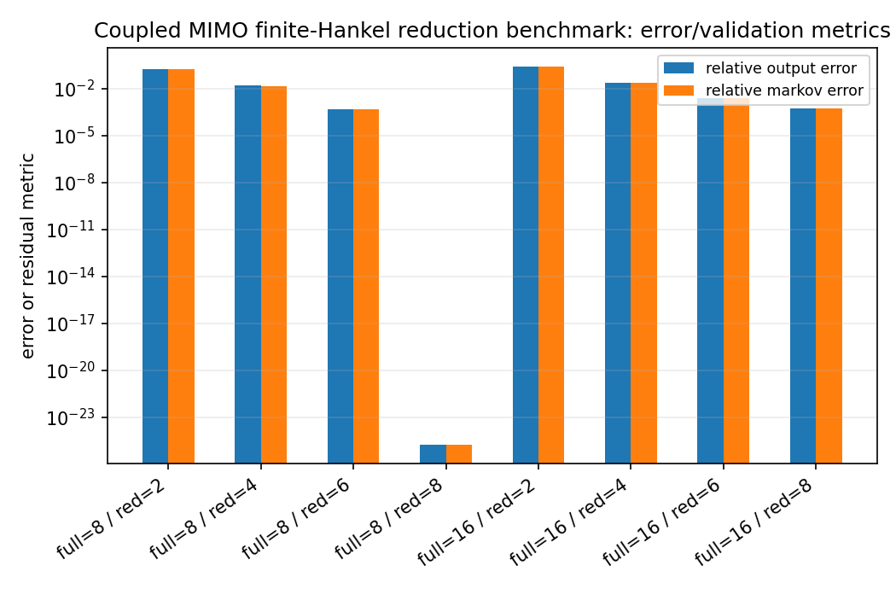
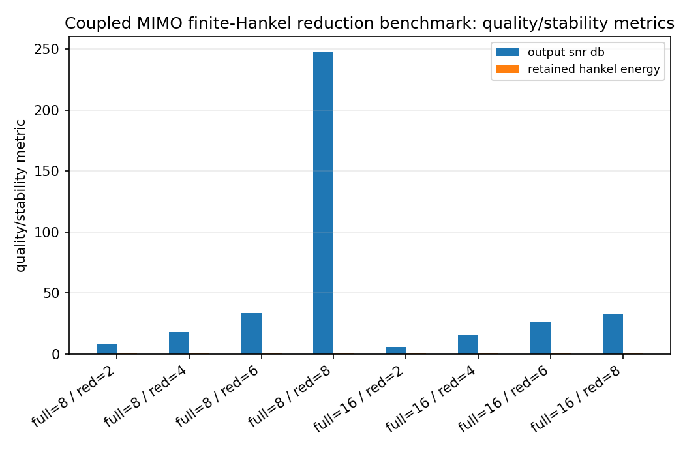
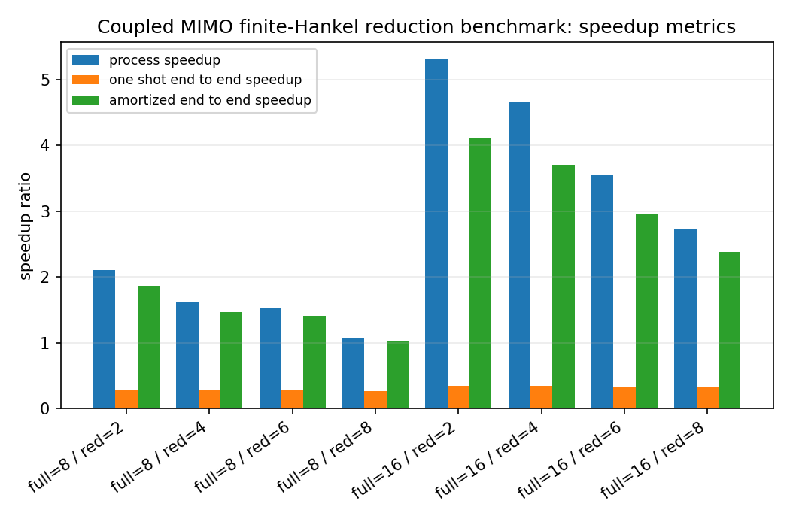
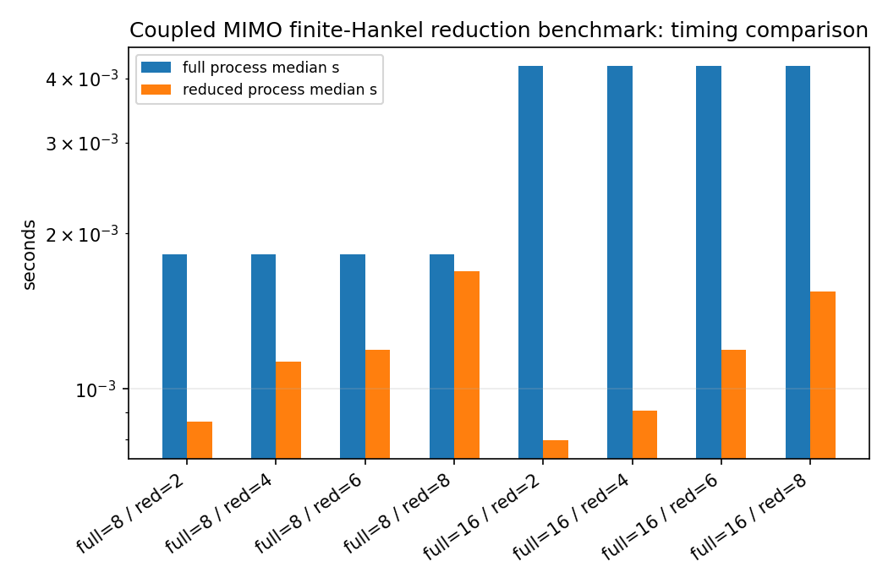

Coupled MIMO finite-Hankel reduction benchmark¶
Tutorial goal
Measure finite block-Hankel reduction cost and repeated state-space simulation speedup on coupled MIMO systems.
Note
New to the terminology? See the lattice DSP concept map and the causality/data-use guide for how online, offline, block, and MIMO examples should be read.
Context¶
The MIMO reducer returns state-space matrices rather than scalar filter coefficients. This
benchmark therefore measures the repeated cost of simulating the full and reduced MIMO
systems on batched multichannel input signals. It uses the compiled
mimo_state_space_process_batch kernel when available, so the measured processing time
reflects the current C++ state-space runtime rather than a pure Python loop.
The table deliberately separates three concepts: processing speedup, one-shot end-to-end
speedup including a single reduction, and amortized end-to-end speedup after reusing the
reduced model for --reuse-count additional batches. This keeps the benchmark scope explicit: the
reduction can have excellent repeated-runtime speedups while still needing enough reuse to
pay back preprocessing.
This is still the reference block-Hankel/ERA-style baseline. It is not a matrix AAK/Nehari solver; it is the finite block-Hankel reference point for comparison with matrix optimal-reduction methods.
Key idea and equations¶
The benchmark reports processing speedup
one-shot end-to-end speedup including one reduction,
and amortized end-to-end speedup across K reused batches,
How to read the result¶
Look for stable reduced state matrices, decreasing Markov/output error with order, high processing speedup, and amortized end-to-end speedup above one when the workload reuses the reduced model enough times.
Run command¶
python benchmarks/mimo_hankel_reduction_speedup.py --full-orders 8 16 --reduced-orders 2 4 6 8 --inputs 3 --outputs 3 --batch 8 --samples 6000 --repeats 2 --reuse-count 50 --n-threads 1 --n-markov 256 --block-rows 32 --block-cols 32 --output docs/benchmarks/generated/_artifacts/mimo_hankel_reduction_speedup/mimo-hankel-reduction-speedup.json
Run status¶
Return code: 0
Visual and data readout¶
When the benchmark gallery is built with results, this page embeds PNG summaries generated from the same JSON/CSV artifacts. The raw data stay available below as downloads so exact numbers remain reproducible without making the public page read like console output.
Figures¶
{kind=link}

mimo_hankel_reduction_speedup_error_summary.png¶
{kind=link}

mimo_hankel_reduction_speedup_quality_summary.png¶
{kind=link}

mimo_hankel_reduction_speedup_speedup_summary.png¶
{kind=link}

mimo_hankel_reduction_speedup_timing_comparison.png¶
Generated data files¶
Source code¶
1"""Benchmark finite block-Hankel reduction on coupled MIMO systems.
2
3The reducer returns state-space models. This benchmark therefore measures the
4one-time reduction cost and the repeated cost of simulating the full and reduced
5state-space systems on batched MIMO input signals.
6"""
7
8from __future__ import annotations
9
10import argparse
11import json
12import math
13import platform
14import statistics
15import time
16from pathlib import Path
17
18import numpy as np
19
20import lattice_dsp as ld
21
22
23def state_spectral_radius(A) -> float:
24 A = np.asarray(A, dtype=float)
25 if A.size == 0:
26 return 0.0
27 return float(np.max(np.abs(np.linalg.eigvals(A))))
28
29
30def coupled_state_space(order: int, outputs: int, inputs: int, seed: int):
31 rng = np.random.default_rng(seed)
32 q, _ = np.linalg.qr(rng.normal(size=(order, order)))
33 radii = np.linspace(0.90, 0.18, order)
34 signs = np.where(np.arange(order) % 2 == 0, 1.0, -1.0)
35 A = q @ np.diag(signs * radii) @ q.T
36 B = 0.28 * rng.normal(size=(order, inputs))
37 C = 0.28 * rng.normal(size=(outputs, order))
38 D = 0.025 * rng.normal(size=(outputs, inputs))
39 if inputs == outputs:
40 D += 0.035 * (np.ones((outputs, inputs)) - np.eye(outputs))
41 return A, B, C, D
42
43
44def state_space_process_python(A, B, C, D, x):
45 A = np.asarray(A, dtype=float)
46 B = np.asarray(B, dtype=float)
47 C = np.asarray(C, dtype=float)
48 D = np.asarray(D, dtype=float)
49 x = np.asarray(x, dtype=float)
50 batch, samples, _ = x.shape
51 n_outputs = D.shape[0]
52 n_state = A.shape[0]
53 state = np.zeros((batch, n_state), dtype=float)
54 y = np.zeros((batch, samples, n_outputs), dtype=float)
55 for n in range(samples):
56 xn = x[:, n, :]
57 y[:, n, :] = state @ C.T + xn @ D.T
58 if n_state:
59 state = state @ A.T + xn @ B.T
60 return y
61
62
63def state_space_process(A, B, C, D, x, n_threads: int = 0):
64 """Use the compiled state-space processor when available.
65
66 The Python fallback keeps the benchmark source readable when somebody runs it
67 against an older local extension before rebuilding.
68 """
69
70 compiled = getattr(ld, "mimo_state_space_process_batch", None)
71 if compiled is None:
72 return state_space_process_python(A, B, C, D, x)
73 return compiled(A, B, C, D, x, n_threads=n_threads)
74
75
76def median_time(fn, repeats: int):
77 values = []
78 result = None
79 for _ in range(repeats):
80 t0 = time.perf_counter()
81 result = fn()
82 values.append(time.perf_counter() - t0)
83 return statistics.median(values), result
84
85
86def rel_mse(reference, estimate) -> float:
87 reference = np.asarray(reference, dtype=float)
88 estimate = np.asarray(estimate, dtype=float)
89 return float(np.sum((reference - estimate) ** 2) / (np.sum(reference**2) + 1e-30))
90
91
92def snr_db_from_rel_mse(value: float) -> float:
93 return 10.0 * math.log10(1.0 / max(value, 1e-300))
94
95
96def break_even_samples_per_batch(reduction_s: float, full_s: float, reduced_s: float, samples: int):
97 full_per_sample = full_s / samples
98 reduced_per_sample = reduced_s / samples
99 saved = full_per_sample - reduced_per_sample
100 if saved <= 0.0:
101 return None
102 return reduction_s / saved
103
104
105def run(args):
106 rng = np.random.default_rng(args.seed)
107 rows = []
108 n_threads = getattr(args, "n_threads", 0)
109 reuse_count = max(1, int(getattr(args, "reuse_count", 1)))
110
111 for full_order in args.full_orders:
112 A, B, C, D = coupled_state_space(full_order, args.outputs, args.inputs, args.seed + full_order)
113 markov = ld.mimo_state_space_markov_response(A, B, C, D, args.n_markov)
114 x = rng.normal(size=(args.batch, args.samples, args.inputs))
115
116 full_time, y_full = median_time(
117 lambda A=A, B=B, C=C, D=D, x=x: state_space_process(A, B, C, D, x, n_threads),
118 args.repeats,
119 )
120
121 for reduced_order in args.reduced_orders:
122 if reduced_order > min(args.block_rows * args.outputs, args.block_cols * args.inputs):
123 continue
124 if reduced_order > full_order:
125 continue
126
127 t0 = time.perf_counter()
128 try:
129 reduction = ld.finite_hankel_reduce_mimo(
130 markov,
131 reduced_order=reduced_order,
132 block_rows=args.block_rows,
133 block_cols=args.block_cols,
134 )
135 reduce_s = time.perf_counter() - t0
136 except ValueError as exc:
137 rows.append(
138 {
139 "full_order": full_order,
140 "reduced_order": reduced_order,
141 "stable": False,
142 "error": str(exc),
143 }
144 )
145 continue
146
147 red_time, y_red = median_time(
148 lambda r=reduction, x=x: state_space_process(r["A"], r["B"], r["C"], r["D"], x, n_threads),
149 args.repeats,
150 )
151 output_rel = rel_mse(y_full, y_red)
152 approx_markov = ld.mimo_state_space_markov_response(
153 reduction["A"], reduction["B"], reduction["C"], reduction["D"], args.n_markov
154 )
155 markov_rel = rel_mse(markov, approx_markov)
156 filter_speedup = full_time / red_time if red_time > 0 else float("inf")
157 one_shot_end2end = full_time / (reduce_s + red_time) if reduce_s + red_time > 0 else float("inf")
158 amortized_denominator = reduce_s + reuse_count * red_time
159 amortized_end2end = (
160 (reuse_count * full_time) / amortized_denominator
161 if amortized_denominator > 0
162 else float("inf")
163 )
164 break_even = break_even_samples_per_batch(reduce_s, full_time, red_time, args.samples)
165
166 rows.append(
167 {
168 "full_order": full_order,
169 "reduced_order": reduced_order,
170 "stable": bool(reduction["stable"]),
171 "full_state_radius": state_spectral_radius(A),
172 "reduced_state_radius": state_spectral_radius(reduction["A"]),
173 "retained_hankel_energy": float(reduction["retained_hankel_energy"]),
174 "relative_markov_error": markov_rel,
175 "relative_output_error": output_rel,
176 "output_snr_db": snr_db_from_rel_mse(output_rel),
177 "reduction_time_s": reduce_s,
178 "full_process_median_s": full_time,
179 "reduced_process_median_s": red_time,
180 "process_speedup": filter_speedup,
181 "one_shot_end_to_end_speedup": one_shot_end2end,
182 "amortized_end_to_end_speedup": amortized_end2end,
183 "reuse_count": reuse_count,
184 "break_even_samples_per_batch": break_even,
185 }
186 )
187
188 metadata = {
189 "python": platform.python_version(),
190 "platform": platform.platform(),
191 "has_openmp": bool(getattr(ld, "HAS_OPENMP", False)),
192 "inputs": args.inputs,
193 "outputs": args.outputs,
194 "batch": args.batch,
195 "samples": args.samples,
196 "repeats": args.repeats,
197 "reuse_count": reuse_count,
198 "n_threads": n_threads,
199 "state_space_backend": "compiled" if getattr(ld, "mimo_state_space_process_batch", None) is not None else "python",
200 "n_markov": args.n_markov,
201 "block_rows": args.block_rows,
202 "block_cols": args.block_cols,
203 "seed": args.seed,
204 "description": "Coupled MIMO finite block-Hankel reduction benchmark. Reduction is a preprocessing cost; processing speedup is measured by batched state-space simulation, and amortized end-to-end speedup assumes the reduced model is reused for reuse_count batches.",
205 }
206 return {"metadata": metadata, "rows": rows}
207
208
209def print_table(result):
210 print(json.dumps(result["metadata"], indent=2))
211 print()
212 print(
213 f"{'full':>5s} {'red':>5s} {'stable':>7s} {'reduce_s':>10s} {'proc_x':>9s} "
214 f"{'one_x':>8s} {'reuse_x':>9s} {'SNR':>8s} {'markov_err':>12s} {'radius':>8s} {'break_even':>12s}"
215 )
216 print("-" * 110)
217 for row in result["rows"]:
218 if "error" in row:
219 print(
220 f"{row['full_order']:5d} {row['reduced_order']:5d} {'False':>7s} "
221 f"{'n/a':>10s} {'n/a':>9s} {'n/a':>8s} {'n/a':>9s} "
222 f"{'n/a':>8s} {'n/a':>12s} {'n/a':>8s} {'n/a':>12s}"
223 )
224 continue
225 be = row["break_even_samples_per_batch"]
226 be_text = "n/a" if be is None else f"{be:.0f}"
227 print(
228 f"{row['full_order']:5d} {row['reduced_order']:5d} {str(row['stable']):>7s} "
229 f"{row['reduction_time_s']:10.4f} {row['process_speedup']:9.2f} "
230 f"{row['one_shot_end_to_end_speedup']:8.2f} {row['amortized_end_to_end_speedup']:9.2f} "
231 f"{row['output_snr_db']:8.2f} {row['relative_markov_error']:12.3e} "
232 f"{row['reduced_state_radius']:8.4f} {be_text:>12s}"
233 )
234
235
236def main():
237 parser = argparse.ArgumentParser(description=__doc__)
238 parser.add_argument("--full-orders", type=int, nargs="+", default=[8, 16, 32])
239 parser.add_argument("--reduced-orders", type=int, nargs="+", default=[2, 4, 6, 8, 12])
240 parser.add_argument("--inputs", type=int, default=3)
241 parser.add_argument("--outputs", type=int, default=3)
242 parser.add_argument("--batch", type=int, default=16)
243 parser.add_argument("--samples", type=int, default=20000)
244 parser.add_argument("--repeats", type=int, default=3)
245 parser.add_argument(
246 "--reuse-count",
247 type=int,
248 default=1,
249 help="number of additional batches over which to amortize the one-time reduction cost",
250 )
251 parser.add_argument(
252 "--n-threads",
253 type=int,
254 default=1,
255 help="thread count for the compiled state-space processor; use 0 for the OpenMP default when available",
256 )
257 parser.add_argument("--n-markov", type=int, default=512)
258 parser.add_argument("--block-rows", type=int, default=48)
259 parser.add_argument("--block-cols", type=int, default=48)
260 parser.add_argument("--seed", type=int, default=911)
261 parser.add_argument("--output", default="reports/mimo-hankel-reduction-speedup.json")
262 args = parser.parse_args()
263
264 result = run(args)
265 print_table(result)
266
267 output = Path(args.output)
268 output.parent.mkdir(parents=True, exist_ok=True)
269 output.write_text(json.dumps(result, indent=2), encoding="utf-8")
270 print(f"\nWrote {output}")
271
272
273if __name__ == "__main__":
274 main()